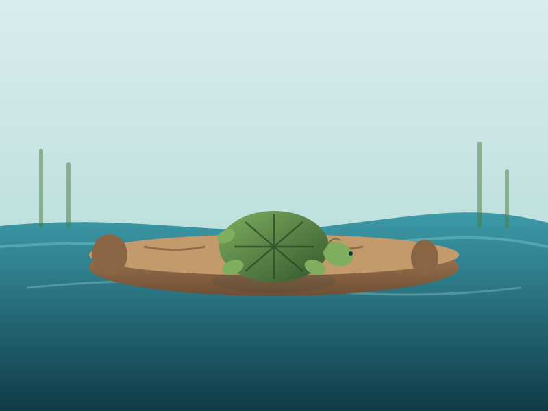
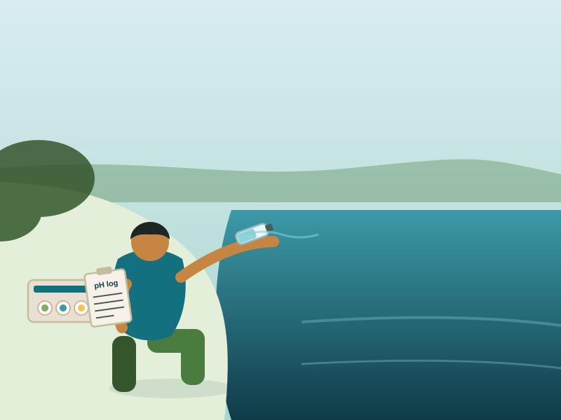

Education & Resources
Cleanups deal with the litter that's already there. Education is how we cut down on the litter that shows up next. Here's what we've put together so far.

Plastic Pollution & Local Wildlife
How litter on the pathway actually affects the herons, turtles, and fish that live in the Bronx River, and what we've noticed firsthand.
Read & print this guide
Cutting Back on Single-Use Plastic
Small, realistic swaps for daily life. Not a guilt trip, just what's actually worked for our volunteers and their families.
Read & print this guide
Water-Quality Data Collection
What we measure at the river, how we record it, and why testing the same way every time actually matters.
Read & print this guideLitter is what you can see. Water quality is what you can't.
Alongside cleanups, we take basic water-quality readings at a few fixed spots along the pathway: pH, temperature, turbidity (how cloudy the water is), and dissolved oxygen. None of it requires a lab. It just requires doing it the same way every time, so the numbers actually mean something over months and years.
Every guide on this page was written and designed by students in this project. If something's unclear or you think we're missing a topic, let us know.